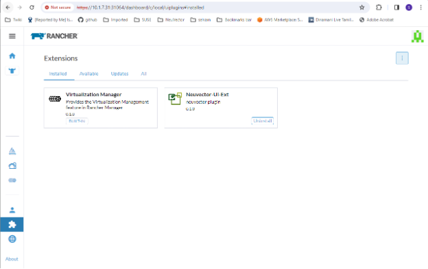
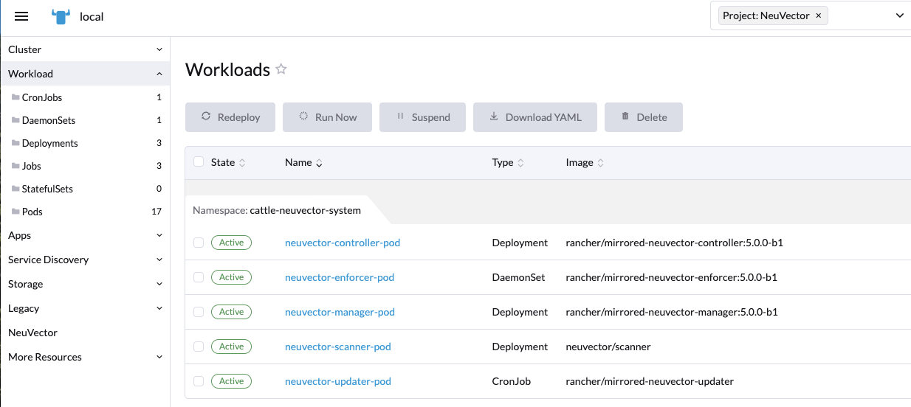
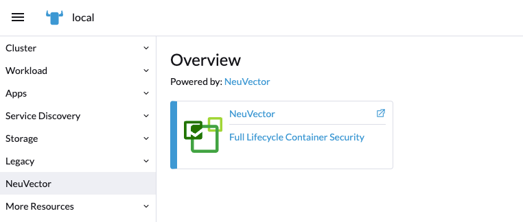
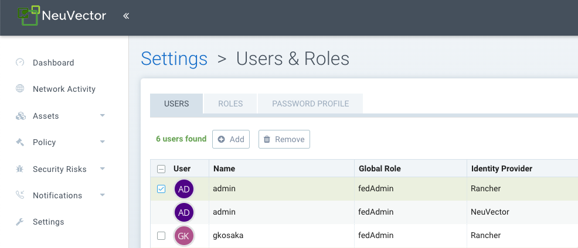
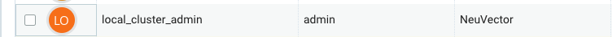

Rancherのデプロイメント
Rancherの拡張機能またはアプリとマーケットプレイスを通じてSUSE® Securityをデプロイおよび管理する
SUSE® Securityは、プライム顧客向けのRancher拡張機能またはRancherアプリとマーケットプレイスを通じて簡単にデプロイできます。デフォルトの（Helmベースの）SUSE® Securityデプロイメントは、cattle-neuvector-systemネームスペースにSUSE® Securityコンテナをデプロイします。
|
Rancherバージョン2.7.0以上のSUSE® SecurityRancher拡張機能（SUSE® Security）またはRancherバージョン2.6.5以上のアプリとマーケットプレイスを通じてのデプロイメントのみが、Rancherを通じて直接管理できます（SUSE® Securityコンソールへのシングルサインオン）。SUSE® Securityがすでにデプロイされている状態でRancherにクラスターを追加する場合、またはSUSE® Securityがクラスターに直接デプロイされている場合、これらのクラスターはSSO統合のために有効化されません。 |
SUSE® SecurityRancher用のUI拡張機能
Rancherプライム顧客は、SUSE® SecurityおよびRancher用のSUSE® Security UI拡張機能を簡単にデプロイできます。これにより、プライムユーザーはRancher UIを通じて特定のSUSE® Security機能やイベントを直接監視および管理できるようになります。コミュニティユーザーの方は、Rancherアプリとマーケットプレイスからデプロイするために、以下のデプロイSUSE® Securityセクションをご覧ください。
-
最初のステップは、まだ有効化されていない場合、Rancher拡張機能の機能をグローバルに有効化することです。


-
利用可能なリストからSUSE® Security-UI-Extをインストールする

-
インストールが完了したら、拡張機能を再ロードする

-
選択したクラスターで、SUSE® Securityアプリがまだインストールされていない場合は、SUSE® SecurityタブからSUSE® Securityアプリケーションをインストールします。これにより、アプリのインストール手順に進むことができます。このインストールプロセスの詳細については、以下のデプロイ SUSE® Security セクションを参照してください。

-
SUSE® Security ダッシュボードは、現在そのクラスターの SUSE® Security メニューから表示されるはずです。このダッシュボードから、クラスターのセキュリティヘルスの概要を監視できます。ダッシュボードには、セキュリティリスクスコアを改善するためのウィザードを起動するなどのインタラクティブな要素が含まれており、有効になっていない場合は脆弱性の自動スキャンをオンにすることもできます。

さらに、ダッシュボードの右上にあるリンクは、詳細な分析と設定のためのフルSUSE® Securityコンソールへの便利なシングルサインオン(SSO)リンクを提供します。
-
拡張機能をアンインストールするには、拡張機能ページに戻ります。

SUSE® SecurityUI拡張機能をアンインストールしても、各クラスターからSUSE® Securityアプリはアンインストールされません。SUSE® Securityメニューは、SUSE® SecurityコンソールへのSSOリンクを提供するように戻ります。
デプロイ SUSE® Security
まず、Rancher チャートの中から SUSE® Security チャートを見つけて選択し、指示とさまざまな設定値を確認します。（オプション）必要に応じてデプロイするプロジェクトを作成します。例: SUSE® Security。注意:複数の SUSE® Security チャートが表示される場合は、レガシーなSUSE® Security 4.x Helmチャートのアップグレード用のものを選択しないでください。

SUSE® Securityチャートをデプロイします。まず、Rancherデプロイメントに適切な値を設定します。例:
-
コンテナの実行時、例: RKE 用の docker および RKE2 用の containerd、または K3s を使用する場合は K3s の値を選択します。
-
マネージャーサービスのタイプ: パブリッククラウドデプロイメントで利用可能な場合は、LoadBalancer に変更します。Rancher 経由でのみアクセスすることを希望する場合は、ここで許可されている任意の値が機能します。SUSE® Security におけるデフォルトの管理者パスワードを変更することに関する重要な注意事項を以下に参照してください。
-
このクラスターがマルチクラスターのフェデレーテッドプライマリであるか、リモートであるかを示します（どちらのオプションも希望する場合は両方を選択します）。
-
設定バックアップ用の永続ボリューム

チャートの値を確認し、更新した後に「インストール」をクリックしてください。
SUSE® Securityのデプロイメントが成功すると、SUSE® Securityのデプロイメント、デーモンセット、およびクロンジョブの概要が表示されます。左側のサービス発見メニューでデプロイされたサービスも確認できます。

SUSE® Securityを管理する
左側にSUSE® Securityメニュー項目が表示され、それを選択するとSUSE® Securityタイル/ボタンが表示され、クリックすると新しいタブでSUSE® Securityコンソールに移動します。

このシングルサインオン（SSO）アクセス方法が初めて使用されると、RancherユーザーログインのためにSUSE® Securityクラスターに対応するユーザーが作成されます。Rancherにログインしているユーザーと同じユーザー名がSUSE® Securityに作成され、役割はadminまたはfedAdmin、アイデンティティプロバイダーはRancherとなります。

上記のスクリーンショットに注意してください。SSOのために、2人のRancherユーザーadminとgkosakaが自動的に作成されています。SUSE® Securityに別のユーザーが手動で作成されると、アイデンティティプロバイダーはSUSE® Securityとして表示されます。このローカルユーザーは、Rancherを経由せずにSUSE® Securityコンソールに直接ログインできます。

|
admin/adminとしてSUSE® Securityコンソールに直接ログインし、管理者パスワードを強力なパスワードに手動で変更することをお勧めします。これにより、SUSE® Securityアイデンティティプロバイダーの管理者ユーザーパスワードのみが変更されます（アイデンティティプロバイダーがRancherの別の管理者ユーザーが表示される場合があります）。または、Rancherからの初期デプロイメントにConfigMapをシークレットとして含めて、デフォルトの管理者パスワードを強力なパスワードに設定します（ConfigMap設定のチャート値を参照）。 |
NeuVector/Rancher SSO権限リソース
Rancher v2.9.2 UIでは、`Global/Cluster/Project/Namespaces`ロールを作成する際にNeuVector権限リソースを選択できます。RancherユーザーにNeuVector権限リソースを持つロールが割り当てられると、そのユーザーのNeuVector SSOセッションはそれに応じたNeuVector権限が割り当てられます。これは、SSOユーザーに予約された`admin/reader/fedAdmin/fedReader`ロール以外のカスタムロールを提供するためのものです。
以下は、適用可能な`Global/Cluster/Project/Namespaces`ロールと共に使用されるマッピングされた権限リソースです。
`Global/Cluster`ロールのマッピングされた権限リソース
|
ユーザーは、NeuVector関連の`Global/Cluster`ロールに*（動詞）/services/proxy（リソース）を手動で追加する必要があります。 |
APIグループ：
permission.neuvector.com
動詞：
get // for read-only(i.e. view)
* // for read/write(i.e. modify)リソース
NeuVector、クラスター範囲
AdmissionControl
Authentication
CI Scan
Cluster
Federation
VulnerabilityNeuVector、ネームスペース
AuditEvents
Authorization
Compliance
Events
Namespace
RegistryScan
RuntimePolicy
RuntimeScan
SecurityEvents
SystemConfig`Project/Namespace`ロールのマッピングされた権限リソース
|
ユーザーは、NeuVector関連の`Project/Namespace`ロールに*（動詞）/services/proxy（リソース）を手動で追加する必要があります。 |
APIグループ：
permission.neuvector.com
動詞：
get // for read-only(i.e. view)
* // for read/write(i.e. modify)リソース
NeuVector、ネームスペース
AuditEvents
Authorization
Compliance
Events
Namespace
RegistryScan
RuntimePolicy
RuntimeScan
SecurityEvents
SystemConfig
Rancherレガシーデプロイメント
サンプルファイルは、1つのマネージャーと3つのコントローラーをデプロイメントします。すべてのノードにエンフォーサーをデプロイメントします。ノードラベルを使用して専用のマネージャーまたはコントローラーノードを指定するには、下部セクションを参照してください。注意:セッション状態の問題の可能性があるため、ロードバランサーの背後に1つ以上のマネージャーをデプロイ（スケール）することは推奨されません。
|
Rancher 2.x/Kubernetesへのデプロイメントは、Kubernetesリファレンスセクションおよび/またはHelmベースのデプロイメントに従うべきです。 |
-
カタログdocker-compose-dist.ymlをデプロイし、ラベル付けされたノードにコントローラーがデプロイされ、残りのノードにエンフォーサーがデプロイされます。（サンプルファイルは、エンフォーサーが指定されたノードにのみデプロイされるように変更できます。）
-
マネージャーが接続するコントローラーの1つを選択してください。マネージャーのカタログファイルdocker-compose-manager.ymlを修正し、CTRL_SERVER_IPをコントローラーのIPに設定してから、マネージャーカタログをデプロイします。
こちらがサンプルのコンポーズファイルです。コンポーネントを1つまたは2つだけデプロイしたい場合は、そのファイルの該当セクションを使用してください。
Rancherマネージャー/コントローラー/エンフォーサーのComposeサンプルファイル：
manager:
scale: 1
image: neuvector/manager
restart: always
environment:
- CTRL_SERVER_IP=controller
ports:
- 8443:8443
controller:
scale: 3
image: neuvector/controller
restart: always
privileged: true
environment:
- CLUSTER_JOIN_ADDR=controller
volumes:
- /var/run/docker.sock:/var/run/docker.sock
- /proc:/host/proc:ro
- /sys/fs/cgroup:/host/cgroup:ro
- /var/neuvector:/var/neuvector
enforcer:
image: neuvector/enforcer
pid: host
restart: always
privileged: true
environment:
- CLUSTER_JOIN_ADDR=controller
volumes:
- /lib/modules:/lib/modules
- /var/run/docker.sock:/var/run/docker.sock
- /proc:/host/proc:ro
- /sys/fs/cgroup/:/host/cgroup/:ro
labels:
io.rancher.scheduler.global: true特権モードなしでデプロイ
一部のシステムでは、特権モードを使用せずにデプロイすることがサポートされています。これらのシステムは、cap_add設定を使用して機能を追加し、apparmorプロファイルを設定する能力をサポートしている必要があります。
Docker-Compose、Docker UCP/データセンターを使用したデプロイメントに関するセクションを参照してください。サンプルのComposeファイルがあります。
特権モードなしでデプロイするためのRancherのサンプルComposeファイルは次のとおりです：
manager:
scale: 1
image: neuvector/manager
restart: always
environment:
- CTRL_SERVER_IP=controller
ports:
- 8443:8443
controller:
scale: 3
image: neuvector/controller
pid: host
restart: always
cap_add:
- SYS_ADMIN
- NET_ADMIN
- SYS_PTRACE
security_opt:
- apparmor=unconfined
- seccomp=unconfined
- label=disable
environment:
- CLUSTER_JOIN_ADDR=controller
volumes:
- /var/run/docker.sock:/var/run/docker.sock
- /proc:/host/proc:ro
- /sys/fs/cgroup:/host/cgroup:ro
- /var/neuvector:/var/neuvector
enforcer:
image: neuvector/enforcer
pid: host
restart: always
cap_add:
- SYS_ADMIN
- NET_ADMIN
- SYS_PTRACE
- IPC_LOCK
security_opt:
- apparmor=unconfined
- seccomp=unconfined
- label=disable
environment:
- CLUSTER_JOIN_ADDR=controller
volumes:
- /lib/modules:/lib/modules
- /var/run/docker.sock:/var/run/docker.sock
- /proc:/host/proc:ro
- /sys/fs/cgroup/:/host/cgroup/:ro
labels:
io.rancher.scheduler.global: trueマネージャーおよびコントローラーノードのためのノードラベルの使用
マネージャーとコントローラーがデプロイされるノードを制御するには、各ノードにラベルを付けます。コントローラーをデプロイするノードを選択してください。それらに「nvcontroller=true」とラベルを付けます。（現在のサンプルファイルでは、同じノードで1つ以上のコントローラーを実行することはできません）。
マネージャーノードには、"`nvmanager=true`"とラベルを付けます。
yamlファイルにラベルを追加します。たとえば、マネージャーの場合：
labels:
io.rancher.scheduler.global: true
io.rancher.scheduler.affinity:host_label: "nvmanager=true"コントローラーの場合：
labels:
io.rancher.scheduler.global: true
io.rancher.scheduler.affinity:host_label: "nvcontroller=true"エンフォーサーの場合、コントローラーノードでの実行を防ぐために（必要に応じて）：
labels:
io.rancher.scheduler.global: true
io.rancher.scheduler.affinity:host_label_ne: "nvcontroller=true"